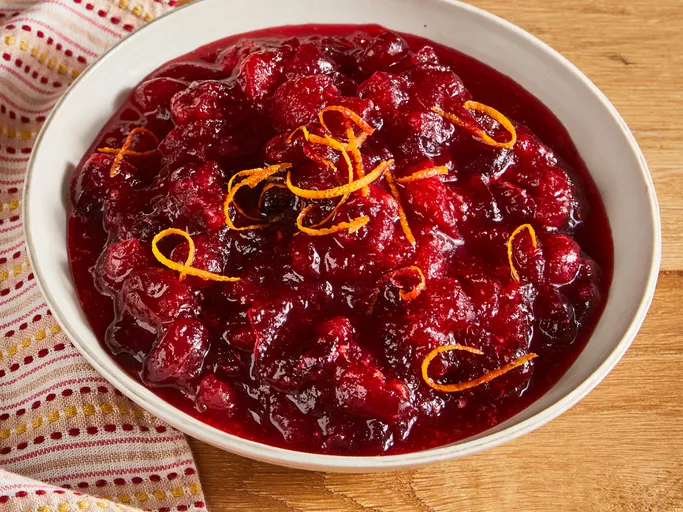

Cranberry Sauce

Description
Ingredients
- Fresh Cranberries: Opt for fresh cranberries that are firm, plump, and blemish-free. Lighter colored cranberries are best for sauce, as they contain more pectin and result in a thicker consistency.
- Sugar: White sugar does more than add sweetness to classic cranberry sauce: It also absorbs liquid and, when heated, thickens the sauce.
- Orange Juice: All cranberry sauce starts with a liquid base. If you don't like orange juice, you can substitute pomegranate juice or even red wine.
Description
- Gather all ingredients.
- Dissolve sugar in orange juice in a medium saucepan over medium heat.
- Stir in cranberries and cook until they start to pop, about 8 to 10 minutes.
- Remove from heat and place sauce in a bowl. It will thicken as it cools.
- Enjoy!